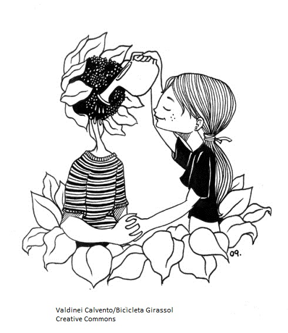

Costuma-se entender texto como um termo que pertence ao universo da linguagem verbal, especialmente da linguagem escrita. Entretanto, o desenvolvimento da semiótica, ao longo do século XX, ampliou o conceito de texto para abraçar também sistemas de linguagem não verbais e parcialmente verbais. Assim, história em quadrinhos, textos teatrais, peças musicais, sinais de trânsito, paisagens ou mesmo vestimentas passaram também a ser chamadas de texto.
Para os nossos propósitos, limitaremos o termo texto ao universo verbal. Intuitivamente, o termo parece não ter segredos para nós, pois ele é uma espécie de curinga que pode substituir outras palavras, como: matéria jornalística, editorial, coluna, monografia, trabalho, redação, parágrafo etc. Mas as coisas se complicam quando nos damos conta de que não há uma definição precisa para aquilo que chamamos de texto, visto que ele pode abranger desde uma simples e breve exclamação (Oh! Ah! etc.) ou um grito, até uma peça de teatro inteira.
Além disso, o texto pode ser inscrito em prosa ou verso, como monólogo ou diálogo. Ele pode ainda aparecer na forma descritiva, narrativa ou dissertativa.
Em suma: qualquer sequência de palavras – o romance Guerra e paz, de Liev Tolstói, um haikai (ou haiku), a letra de uma canção de Fagner, uma lista de supermercado, uma entrevista em áudio, uma receita médica – pode ser qualificada como um texto e, consequentemente, ser filtrada pela mesma malha processadora de textos.
Iuri Lotman, um famoso semioticista russo, discutiu quatro características constitutivas do texto: a) expressão, b) delimitação, c) hierarquia e d) estruturação.
a) A expressão considera que o texto é fixo em uma cadeia de signos, em contraposição às estruturas extratextuais, que também podem ser chamadas de contexto de um texto.
b) A delimitação supõe duas demarcações: de um lado, uma fronteira entre os signos que pertencem ao texto e todos os outros signos que não pertencem a ele. De outro lado, o texto concebido como uma estrutura frasal em expansão, ou seja, um texto sem limites precisos. Para Lotman, entretanto, o texto é sempre uma unidade mínima que desempenha uma função cultural, por exemplo, um romance, um documento, uma oração, uma matéria de jornal etc. Isso quer dizer que o texto possui uma unidade de significação que é dada por sua totalidade delimitada, com começo, meio e fim. Mas a delimitação não está restrita à sua distinção do que lhe é externo, pois há, dentro do texto, uma série de delimitações, por exemplo os parágrafos ou os capítulos de um livro.
c) O que se pressupõe na noção de delimitação é a terceira característica do texto: a noção de hierarquia. O texto se organiza hierarquicamente, uma vez que um dado segmento pode ser um elemento dentro de estruturas de ordens diferentes – aspecto que só pode ser bem compreendido quando se explicita a quarta característica do texto, sua estruturação.
d) O caráter estrutural não é dado pela simples sucessão de signos no intervalo de dois limites externos. É própria do texto a organização interna que o transforma em um todo estrutural. Assim, o texto é um sistema de relações entre elementos de diferentes níveis:
Fonológico
Exemplo: gato, cato, mato, nato, bato, pato etc. As palavras seriam idênticas, não fosse um único som que as diferencia.
 Gramatical
Exemplo: A enxurrada causou engarrafamento em toda a cidade. Eita! que calor!
Sei lá...
Vamos ao cinema hoje?
Narratológico
Exemplo: “Sorriram-se, viram-se. Era infinitamente maio e Jó Joaquim pegou o amor.” (ROSA, João Guimarães. “Desenredo”. In: Tutameia: terceiras estórias. Rio de Janeiro: Nova Fronteira, 2001.)